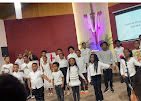

Children's Ministry
Helping children learn God’s Word in a joyful, loving, and nurturing environment.
Our ministries help children, youth, adults, and families grow in faith and serve with joy.

Helping children learn God’s Word in a joyful, loving, and nurturing environment.
Encouraging youth through discipleship, fellowship, mentoring, and worship.
Creating space for women to pray, grow, and support one another in faith.
Equipping men for faithful leadership, discipleship, and service in church and home.
Leading the congregation in worship through music, prayer, and spiritual reflection.
Sharing Christ’s love through service, support, and community engagement.